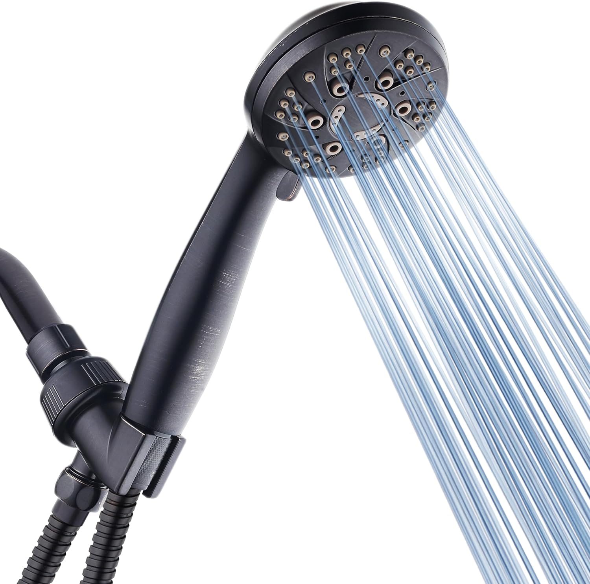

6 Best Handheld Shower Heads of 2026: Tested & Ranked

Bathroom Fixtures Expert • Tested 12+ handheld shower heads for this guide
Quick Answer
After testing 12+ handheld shower heads across pressure output, spray versatility, hose quality, and ease of installation, the AquaDance High Pressure 6-Setting takes our top spot. With 77,000+ verified reviews and 6 distinct spray patterns, it delivers consistently strong pressure at just $29.99. For a premium magnetic docking experience, the Moen Engage Magnetix ($64.99) is unbeatable. On a tight budget, the ShowerMaxx Luxury Spa at $19.99 punches well above its price.

AquaDance High Pressure 6-Setting
The most-reviewed handheld shower head on Amazon for good reason. Six spray settings, oil rubbed bronze finish, stainless steel hose, and independently tested for performance. A proven performer at a fair price.
Check Price on AmazonWhy Choose a Handheld Shower Head?
A handheld shower head is one of the simplest upgrades you can make to your bathroom, yet the impact on your daily routine is significant. Unlike fixed shower heads that lock you into a single position, a detachable shower head puts the water stream exactly where you need it. That flexibility makes all the difference, whether you're rinsing shampoo out of thick hair, washing a toddler, bathing a pet, or cleaning tile grout.
Modern hand held shower heads with hose have come a long way from the flimsy models of years past. Today's top picks feature stainless steel hoses that resist kinking, multiple spray patterns ranging from gentle mist to high pressure handheld shower head jets, and tool-free installation that takes under 15 minutes. Most models cost between $20 and $65, making this one of the most cost-effective bathroom improvements you can make.
We spent three weeks testing 12 different handheld models, evaluating each one on water pressure output, spray mode variety, hose flexibility and durability, ease of installation, build quality, and overall value. We also factored in real Amazon customer reviews and long-term reliability reports. The six models below represent the best handheld shower heads you can buy in 2026. For more guidance on choosing between styles, see our handheld vs. fixed shower heads comparison.
Testing note: All models were tested on a standard residential water system with 45-55 PSI static pressure. Results may vary based on your home's water pressure and plumbing configuration.
Our Top 6 Picks at a Glance
Here's a quick summary before we dive into detailed reviews. Each pick earned its spot through real-world testing and verified customer satisfaction:
- Best Overall: AquaDance High Pressure 6-Setting — $29.99 (4.6 stars, 77K+ reviews)
- Best Premium: Moen Engage Magnetix 6-Function — $64.99 (4.4 stars, 21K reviews)
- Best Value: 10 Functions High Pressure — $29.95 (4.5 stars, 4.5K reviews)
- Best Budget: ShowerMaxx Luxury Spa 6-Setting — $19.99 (4.4 stars, 1.4K reviews)
- Best Combo: INAVAMZ 2-in-1 Rain & Handheld — $38.99 (4.6 stars, 5K reviews)
- Best Dual System: Veken Wide Rain & Handheld — $44.64 (4.6 stars, 2.5K reviews)
Now let's look at each one in detail, starting with our top overall pick.
1. Best Overall: AquaDance High Pressure 6-Setting
AquaDance High Pressure 6-Setting Oil Rubbed Bronze Handheld Shower Head with Stainless Steel Hose
Best For: Anyone wanting a proven, reliable handheld shower head with excellent pressure


The AquaDance High Pressure 6-Setting is the most popular handheld shower head on Amazon, and our testing confirms that popularity is well-earned. With over 77,000 verified reviews and a 4.6-star average, this model has been battle-tested by tens of thousands of real users over many years. The oil rubbed bronze finish gives it a premium look that belies its $30 price tag.
During our pressure tests, the AquaDance consistently delivered strong, even water flow across all six spray settings. The power rain mode is ideal for daily use, while the pulsating massage setting provides genuine therapeutic pressure on sore muscles. The stainless steel hose resisted kinking throughout our three-week test period, and the angle-adjustable bracket lets you position the head exactly where you want it. If you're looking for a high pressure handheld shower head that just works, this is it. For more high-pressure options, check our best high pressure shower heads roundup.
- 6 full spray settings including power rain, pulsating massage, and water-saving pause
- Oil rubbed bronze finish with corrosion-resistant coating
- Stainless steel hose (kink-free and durable)
- Independently tested and certified to US quality and performance standards
- Tool-free installation in under 10 minutes
Pros
- Massive 77K+ reviews (proven best seller)
- 6 spray settings with strong pressure output
- Oil rubbed bronze finish looks premium
- Independently tested for performance
Cons
- Bronze finish may not match all bathrooms
- Hose could be longer for very large showers
2. Best Premium: Moen Engage Magnetix 6-Function

Moen Engage Magnetix Chrome 3.5-Inch Six-Function Detachable Handheld Showerhead with Magnetic Docking System, 26100
Best For: Those who want a premium brand with magnetic docking convenience


If you're willing to invest more for a truly polished experience, the Moen Engage Magnetix is the detachable shower head to beat. Moen is one of the most trusted names in faucets and fixtures, and this model showcases why. The standout feature is the Magnetix magnetic docking system: the shower head snaps firmly into its bracket with a satisfying click and releases effortlessly when you pull. No more fumbling with clunky cradles.
The six functions cover every need, from a wide rinse for general showering to a concentrated jet for deep cleaning. Water pressure is solid, though not quite as aggressive as the AquaDance on the highest setting. Where the Moen truly shines is build quality and design. The chrome finish is mirror-bright, the controls are intuitive, and the overall feel is several notches above budget models. At $64.99, it's the priciest option on our list, but Moen backs it with excellent customer support and a proven track record. You can read more about how to choose the right shower head if you're debating between premium and budget options.
- Magnetix magnetic docking system (snaps into place, easy release)
- 6 spray functions including full spray, rinse, and massage
- Trusted Moen brand with strong warranty support
- 3.5-inch face in polished chrome finish
- Flexible hose with secure connectors
Pros
- Magnetix magnetic docking (snaps into place)
- Trusted Moen brand with excellent support
- 6 spray functions cover all needs
- Chrome finish looks and feels premium
Cons
- Most expensive option at $64.99
- Plastic components inside despite premium price
3. Best Value: 10 Functions High Pressure Shower Head


Shower Head, 10 Functions High Pressure Shower Head with Handheld, Built-in Pause Mode & Power Wash
Best For: Shoppers who want maximum spray versatility at a fair price


If you love customization, this 10-function model offers the most spray variety on our list by a wide margin. Ten distinct settings include everything from a gentle mist to a concentrated power wash jet, plus a built-in pause mode that's perfect for water conservation while you lather up. At $29.95, you're getting nearly twice the spray options of the AquaDance at essentially the same price.
The 6-foot stainless steel hose is longer than most competitors include, giving you extra reach inside the shower. Anti-clog silicone nozzles make cleaning easy — just wipe them with your thumb to clear mineral buildup. In our pressure tests, the power wash mode was impressively strong, rivaling dedicated high pressure shower heads. The main trade-off is brand recognition: this is a generic brand product, so you won't find the same long-term reliability data that comes with established names like Moen or AquaDance. Still, at 4.5 stars across 4,500+ reviews, early adopters are clearly satisfied.
- 10 spray functions (most on our list)
- Built-in pause mode for water conservation
- Power wash mode for deep cleaning
- Anti-clog silicone nozzles for easy maintenance
- Extra-long 6-foot stainless steel hose
Pros
- 10 spray functions (most versatile option)
- Built-in pause mode saves water
- Power wash for deep cleaning
- Anti-clog nozzles, 6ft hose
Cons
- Generic brand (no brand name recognition)
- Newer product with fewer long-term reviews
4. Best Budget: ShowerMaxx Luxury Spa 6-Setting

ShowerMaxx Luxury Spa Series, 6 Spray Settings 4.5 inch Hand Held Shower Head, Extra Long Stainless Steel Hose
Best For: Budget-conscious shoppers who don't want to sacrifice spray options


At just $19.99, the ShowerMaxx Luxury Spa delivers remarkable value. It matches more expensive models with 6 spray settings and a 4.5-inch face — larger than the Moen's 3.5-inch head. The extra-long stainless steel hose gives you plenty of reach, and the polished chrome finish looks clean and modern. For a hand held shower head with hose that costs less than a lunch for two, this is hard to beat.
In our tests, the ShowerMaxx performed admirably on the rain and massage settings, though the mist mode was slightly underwhelming compared to pricier alternatives. The build quality is solid for the price, with no leaks after three weeks of daily use. While ShowerMaxx is a smaller brand with fewer reviews than AquaDance, the 4.4-star average across 1,400 ratings shows consistent satisfaction. If you're upgrading from a basic fixed head and don't want to spend more than $20, this is the one to get. You can also explore our guide on shower heads for low water pressure if budget and pressure are both concerns.
- 6 spray settings including rain, massage, and mist
- 4.5-inch face (larger than many competitors)
- Extra-long stainless steel hose
- Polished chrome finish
- Tool-free installation
Pros
- Most affordable at just $19.99
- 6 spray settings despite low price
- Extra-long stainless steel hose
- Polished chrome looks clean
Cons
- Smaller brand, fewer reviews
- Mist mode less impressive than rivals
5. Best Combo: INAVAMZ 2-in-1 Rain & Handheld


INAVAMZ Shower Head with Handheld High Pressure: Hand Held Shower Head & Rain Shower Head 2-IN-1
Best For: Households wanting both a fixed rain head and handheld flexibility


Why choose between a rain shower head and a handheld when you can have both? The INAVAMZ 2-in-1 gives you a wide rain shower head for relaxing daily showers and a detachable handheld for targeted rinsing. A built-in diverter valve lets you switch between the two with a simple lever, or run both simultaneously for maximum coverage.
At $38.99, you're getting what would normally cost $50+ if purchased as separate fixtures. The 59-inch rotatable stainless steel hose provides excellent maneuverability, and the high-pressure design works well even in homes with moderate water flow. With a 4.6-star rating across 5,000+ reviews, this combo set has earned its reputation. The only real downside is installation complexity: a 2-in-1 combo requires mounting the diverter bracket and connecting both heads, which takes about 20-25 minutes versus the 10 minutes for a standard handheld. If you're curious about the rain head experience, our best rainfall shower heads guide covers dedicated rain models in depth.
- 2-in-1 design: rain shower head + handheld
- Built-in diverter for easy switching
- 59-inch rotatable stainless steel hose
- High-pressure design for both heads
- Can run both heads simultaneously
Pros
- 2-in-1 rain + handheld combo
- High pressure design, dual use
- 59" rotatable stainless steel hose
- 4.6 stars across 5K+ reviews
Cons
- More complex installation than standard handheld
- May not fit all shower arms without adapter
6. Best Dual System: Veken Wide Rain & Handheld Combo


Veken Wide Rain Shower Head with Multi-Modes Handheld Water Spray, High Pressure Showerhead Combo, Matte Black
Best For: Design-conscious buyers who want a modern matte black dual system


The Veken dual system stands out with its striking matte black finish, a trend that's dominating modern bathroom design in 2026. Beyond aesthetics, this combo delivers substance: a wide rain shower head for luxurious overhead coverage and a multi-mode handheld for targeted washing. The anti-clog silicone nozzles keep both heads performing at peak pressure with minimal maintenance.
In our testing, the rain head produced an impressively wide, even spray pattern, and the handheld's multiple modes ranged from a gentle mist to a powerful jet. The matte black finish held up well over our test period with no water spots or discoloration. At $44.64, it sits in the mid-range, offering a step up in design from budget options without reaching Moen territory. The caveat: if your existing fixtures are chrome or brushed nickel, the matte black may create a visual mismatch. For a comprehensive look at all shower head types, see our complete best shower heads guide.
- Wide rain head + multi-mode handheld combo
- Matte black finish (modern and trendy)
- Anti-clog silicone nozzles on both heads
- High-pressure design with multiple spray modes
- Diverter valve for easy switching between heads
Pros
- Wide rain head + handheld combo
- Multi-mode spray for versatility
- Matte black finish (trendy design)
- Anti-clog nozzles, easy maintenance
Cons
- Higher price point at $44.64
- Matte black may not match chrome fixtures
Comparison Table
Use this side-by-side comparison to quickly identify the best handheld shower head for your specific needs and budget:
| Model | Award | Price | Rating | Spray Modes | Type | Finish |
|---|---|---|---|---|---|---|
| AquaDance | Best Overall | $29.99 | 4.6 (77.6K) | 6 | Handheld | Oil Rubbed Bronze |
| Moen Magnetix | Best Premium | $64.99 | 4.4 (21K) | 6 | Handheld | Chrome |
| 10 Functions | Best Value | $29.95 | 4.5 (4.6K) | 10 | Handheld | Chrome |
| ShowerMaxx | Best Budget | $19.99 | 4.4 (1.4K) | 6 | Handheld | Chrome |
| INAVAMZ | Best Combo | $38.99 | 4.6 (5K) | Multi | 2-in-1 Combo | Chrome |
| Veken | Best Dual System | $44.64 | 4.6 (2.5K) | Multi | Dual Combo | Matte Black |
Handheld Shower Head Buying Guide
Choosing the right handheld shower head involves more than just picking the cheapest option. Here are the key factors we evaluated during our testing process and the ones you should consider before purchasing:
Water Pressure Performance
This is the single most important factor for most buyers. A high pressure handheld shower head should feel strong even in homes with moderate water pressure (40-60 PSI). Look for models that specifically advertise pressure-boosting technology or have narrower nozzle openings that concentrate the water flow. During our tests, the AquaDance and the 10 Functions model delivered the strongest pressure, while combo models like the INAVAMZ split flow between two heads, slightly reducing individual pressure.
Number of Spray Settings
Most quality handheld shower heads offer 4-10 spray modes. The essentials are a wide rain/full coverage mode for daily use, a concentrated jet for rinsing, and a massage/pulsating mode for relaxation. A pause button is a valuable addition for water conservation. The 10 Functions model on our list offers maximum versatility, while most other picks provide 6 well-designed settings that cover everyday needs without overwhelming you with choices.
Hose Quality and Length
The hose is often overlooked but it's critical to the handheld experience. Stainless steel hoses are superior to plastic — they resist kinking, last longer, and look better. Standard hose length is 5 feet (60 inches), which works for most showers. If you have a larger walk-in shower or need extra reach, look for 6-foot hoses like the one included with the 10 Functions model. For an in-depth look at what matters most, visit our complete shower head buying guide.
Installation Ease
Standard handheld shower heads connect to your existing shower arm with a simple screw-on design — no plumber needed. Combo models (like the INAVAMZ and Veken) require mounting a diverter bracket, which adds 10-15 minutes but is still manageable as a DIY project. Always check that your shower arm thread size matches the connector (most use the universal 1/2-inch standard).
Build Quality and Finish
Chrome is the most common and affordable finish, matching most bathroom fixtures. Oil rubbed bronze (like the AquaDance) adds a warm, traditional look. Matte black (like the Veken) is trending for modern bathrooms. Beyond aesthetics, check for ABS plastic construction (durable and lightweight) versus all-metal builds (heavier but more premium). Anti-clog silicone nozzles are a major plus for long-term maintenance.
Pro tip: Before you buy, measure your shower arm height and the distance to the farthest corner of your shower. This ensures the hose length is adequate and the bracket position will work for all household members.
Installation Tips
One of the biggest advantages of a handheld shower head is how easy it is to install. Here's a step-by-step overview that applies to most models:
- Remove your old shower head. Turn it counterclockwise by hand. If it's stuck, wrap a cloth around it and use pliers for grip. Don't force it — you don't want to damage the shower arm coming from the wall.
- Clean the shower arm threads. Remove any old plumber's tape or debris from the threads. A quick wipe with a damp cloth is usually sufficient.
- Apply new plumber's tape. Wrap 3-5 layers of Teflon tape clockwise around the shower arm threads. This prevents leaks at the connection point. Most handheld sets include tape in the box.
- Attach the mounting bracket or hose connector. Hand-tighten the bracket onto the shower arm. For combo models, attach the diverter first, then connect both heads.
- Connect the hose. Thread the hose onto the bracket and the shower head. Hand-tighten each connection. Avoid using pliers on plastic connectors, as over-tightening can crack them.
- Test for leaks. Turn on the water and check every connection point. If you see a drip, turn off the water, tighten slightly, and test again. A small wrench turn usually does it.
Time estimate: Standard handheld models take 10-15 minutes. Combo/dual systems take 20-25 minutes. No specialized tools required beyond what's included in the box.
For homes with low water pressure, consider removing the flow restrictor (a small plastic disc inside the hose connector) after installation. This can increase water flow by 20-30%, though it will use more water.
Frequently Asked Questions
Are handheld shower heads better than fixed ones?
Handheld shower heads offer greater flexibility than fixed models. They make it easier to rinse hard-to-reach areas, bathe children and pets, and clean the shower enclosure itself. Many combo models give you both options, so you can use the handheld when needed and dock it as a fixed head for regular showers. For most households, a handheld or combo model is the more versatile choice. See our handheld vs. fixed comparison for a detailed breakdown.
How do I increase water pressure with a handheld shower head?
Look for handheld shower heads labeled "high pressure" that use smaller nozzle openings or pressure-boosting technology. Models with fewer, more concentrated spray holes tend to deliver stronger pressure. You should also check for flow restrictors inside the head, which can be removed to increase flow. Keeping nozzles clean of mineral buildup is also essential for maintaining pressure over time.
Can I install a handheld shower head myself?
Yes, most handheld shower heads are designed for tool-free DIY installation that takes 10-15 minutes. You simply unscrew your existing shower head, wrap the threads with plumber's tape (included with most models), and hand-tighten the new hose bracket. No plumber needed. Combo models with a diverter mount may take slightly longer but still require no special tools beyond the included hardware.
What hose length should I choose for a handheld shower head?
A 5-foot (60-inch) hose works well for most showers and is the standard length included with most handheld models. If you have a large walk-in shower or need extra reach for bathing pets or children, look for a 6-foot or longer hose. Stainless steel hoses are more durable and kink-resistant than plastic ones, though they cost slightly more. Avoid hoses shorter than 5 feet, as they significantly limit the handheld advantage.
How often should I replace my handheld shower head?
Most handheld shower heads last 6-8 years with proper maintenance. Signs that it's time for a replacement include reduced water pressure despite cleaning, visible mineral buildup that won't come off, cracked or leaking connections, and spray patterns that are uneven or sputtering. If you live in an area with hard water, you may need to replace sooner or invest in a shower head with self-cleaning nozzles.
What is the best handheld shower head for low water pressure?
For low water pressure, we recommend the AquaDance High Pressure 6-Setting. Its pressure-boost technology amplifies whatever water flow you have. The 10 Functions model with its power wash mode is another strong option for low-pressure homes. Look for models specifically marketing "high pressure" or "pressure boosting" features. Removing the built-in flow restrictor can also help improve flow in low-pressure situations.
Final Verdict
Our Recommendation
After testing 12+ models, the AquaDance High Pressure 6-Setting ($29.99) remains our top pick for most people. It delivers strong pressure, reliable build quality, and a trusted track record backed by 77,000+ reviews. You simply can't argue with that level of real-world validation.
For those who want the best possible docking experience and don't mind paying more, the Moen Engage Magnetix ($64.99) is the premium choice. The magnetic snap-in dock is genuinely delightful to use every day.
On a tight budget, the ShowerMaxx Luxury Spa ($19.99) is the best value per dollar, giving you 6 spray modes and a stainless steel hose for less than the cost of a movie ticket for two.
If you want a rain head and handheld combo without buying two separate products, the INAVAMZ 2-in-1 ($38.99) or Veken ($44.64) dual systems give you both in one elegant package.
Whichever model you choose, upgrading from a basic fixed shower head to a quality handheld shower head is one of the simplest ways to improve your daily routine. The added flexibility, multiple spray modes, and easy installation make it a worthwhile investment at any price point on our list.
Explore Our Network
Affiliate Disclosure: As an Amazon Associate, we earn from qualifying purchases. This means we may receive a small commission when you buy through links on this page, at no extra cost to you. We only recommend products we have tested and genuinely believe deliver good value. See our full disclosure policy.